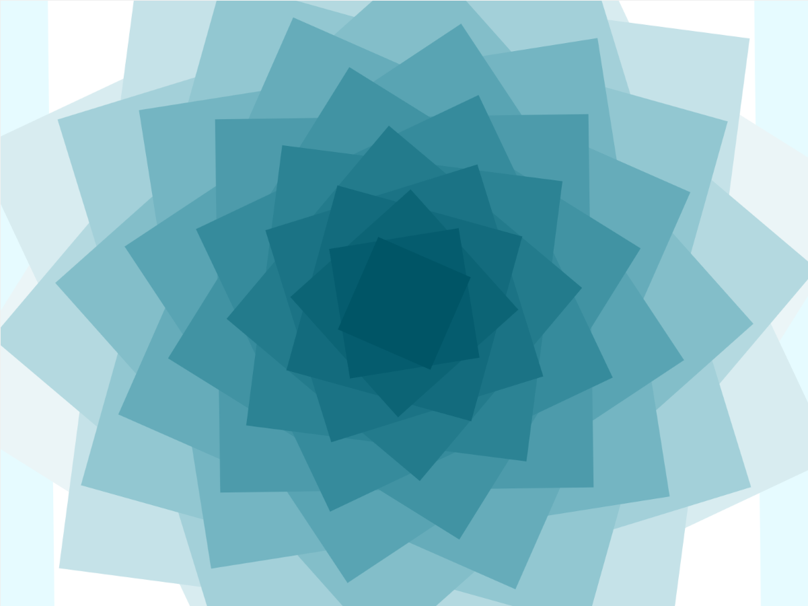
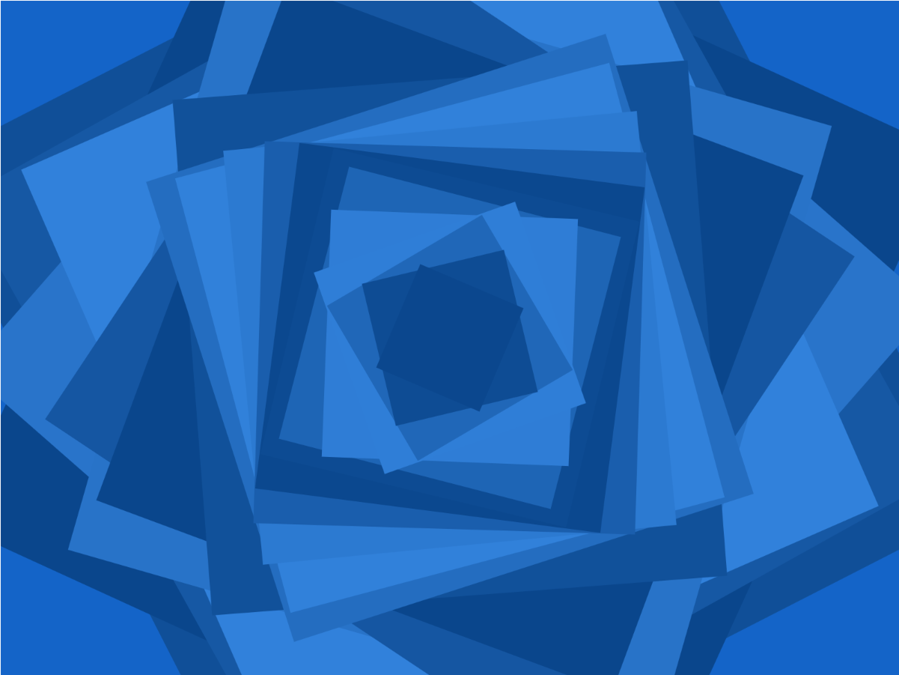
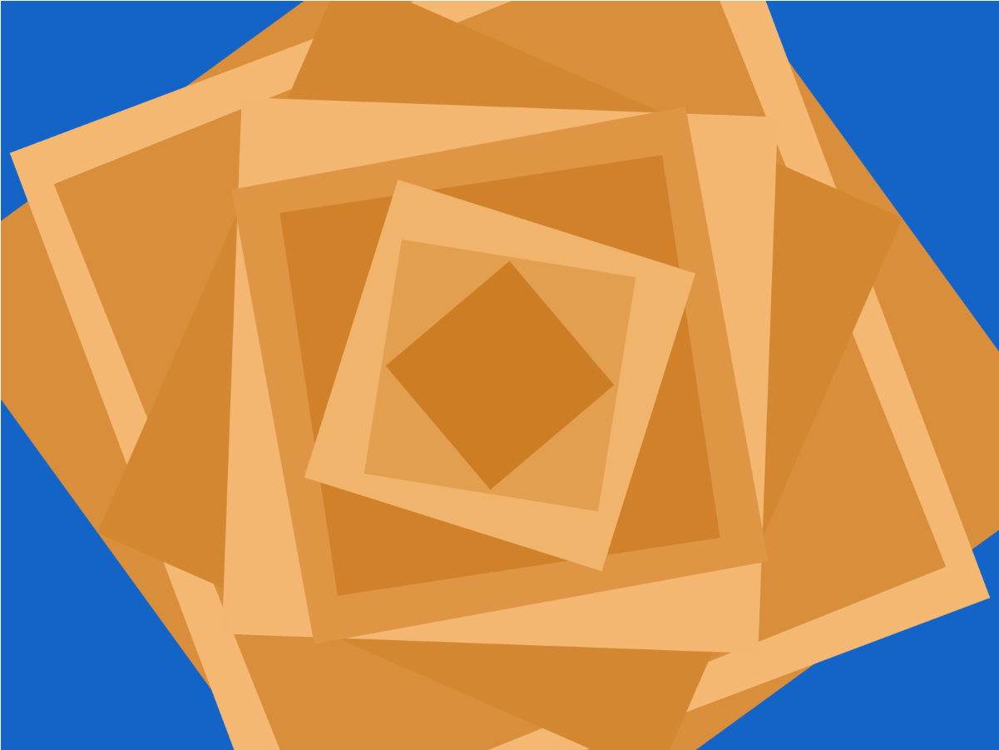

Iteration Generation Assignments

Exploring shapes, repetition, and rotation.
View Project →
Experimenting with cos and sin functions.
View Project →
Using mouse position to control the changes in the shapes.
View Project →1. week3.1
I originally wanted each square to rotate at a different speed, so I changed rotate(rot + i * 0.1) to rotate(rot + i). The result was very different from what I expected. The squares created a flower-like shape as they overlapped at different angles. I was actually surprised by how visually interesting the result was, even though it was not the effect I originally intended.
2. week3.2
In the second version, I tried to use the cos and sin functions to change the color, rotation direction, and speed of the squares, making the squares show different rotation speeds and changes.
3. week3.3
In the third version, I added if functions to use the mouse position to control the changes in the shapes. When the mouse is on the left side of width / 2, the colors are inverted. When the mouse is above height / 2, it draws the 1, 3, 5, 7... squares, while when it is below, it draws the 2, 4, 6, 8... squares.